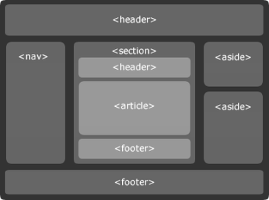

HTML5 a jeho nové prvky
HTML5 je nová verze značkovacího jazyka HTML, která byla vydána v roce 2014 jako "slučující" verze pro XHTML a HTML 4.01. Proč slučující? XHTML a HTML 4.01 měly jiné požadavky na zápis, což mohlo být potenciálním rizikem pro nezobrazení stránky. Vizí HTML5 je usnadnit vývojářům práci. :)
<!DOCTYPE>
- XHTML
<!DOCTYPE html PUBLIC "-//W3C//DTD XHTML 1.1//EN" "http://www.w3.org/TR/xhtml11/DTD/xhtml11.dtd">- HTML 4.01
<!DOCTYPE HTML PUBLIC "-//W3C//DTD HTML 4.01 Transitional//EN" "http://www.w3.org/TR/html4/loose.dtd">- HTML5
<!DOCTYPE html>
Nové elementy
Největší novinkou byly pravděpodobné nové strukturární a sémantické prvky, které nahradily univerzální element
<div>. Co znamená sémantické? To znamená, že jsou čitelnější pro
roboty, kteří prohlížejí a indexují stránky pro vyhledávače.
<header>
Záhlaví stránky ve smyslu viditelné hlavičky webu.
<main>
Vymezuje hlavní obsah stránky.
<article>
Definuje oblast článku.
<section>
Sekce - využívá se pro více účelů. Např. archiv, přehled článků, TOP5 aj..
<aside>
Vedlejší obsah, který moc nesouvisí s hlavním obsahem webu. Např. reklama.
<footer>
Patička webu.
Novými prvky HTML jsou také: <code>,<strong>,<em>,<acronym>,<mark> aj..
Ukázka layoutu s novými strukturálními elementy
Nepárové tagy nemusí končit /> (na to si furt nemohu moc zvyknout) a spoustu atributů bylo zvoleno jako nepovinné. Takže např:
-
<br /><br> -
<img src="X" alt="X" /><img src="X" alt="X"> -
<link rel="stylesheet" type="text/css" href="X"><link rel="stylesheet" href="X"> -
<script type="text/javascript"><script>